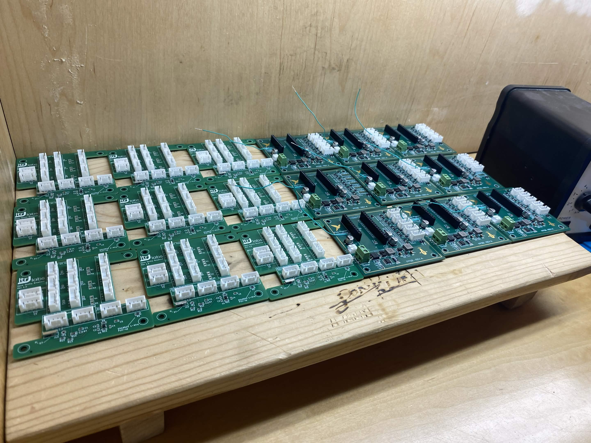

Aqua Sentry Breakout Board
Pink Pigeon Innovations

Project Overview
Our team was engaged to design a custom breakout board to act as a sensor expansion interface. The board retrofits seamlessly into the existing mechanical and electrical constraints, taking 5 inputs from the previous sensor outputs, and routing to 10 outputs. This project doubled the sensor capacity of the original board and added special functionality to maintain power controls that are must have for the long-term battery life.
By providing clear silscreen indication of the different I/Os, the assembly can be easily completed without digging through schematics.
Key Focus Areas
- Flexible functionality: The board provides multiple sensor hookups for 3V3 I2C, 5V I2C and analog signals.
- Retrofitting the existing design: Existing constraints from the original design were analyzed and adhered to, providing a seamless integration of the new module.
- Ease of assembly and testing: Extensive documentation and clear labeling facilitating an efficient assembly and testing process.

"Pink Pigeon contracted Levi and the LTRJ team on a custom sensor expansion breakout board for our AquaSentry smart buoy platform, and I can't recommend them enough!
A few things stood out. Their communication was excellent — they asked smart, clarifying questions throughout instead of guessing, and worked directly with our hardware lead to refine the design as they went. When our team's vacation schedules got in the way, they handled everything: delivery to our mech team, board assembly, wiring, all without us having to ask. That kind of initiative is rare and valued.
The engineering was genuinely impressive. They caught things we'd missed and independently designed a clean solution for switching our new 5V I²C sensor rail on and off, despite our main board had already been manufactured without this in mind. As a details person, my favourite thing was their attention to detail on the silkscreen was on another level — every connector labeled with which sensor goes where, every pin marked, directional arrows, their logo, the works. It's the kind of polish that makes a board easy to actually live with, and it's more professional than work I've seen from people well past this stage. It felt like so much more than a prototype!
If you want a custom PCB done right by people who care about the details and communicate well, talk to LTRJ."